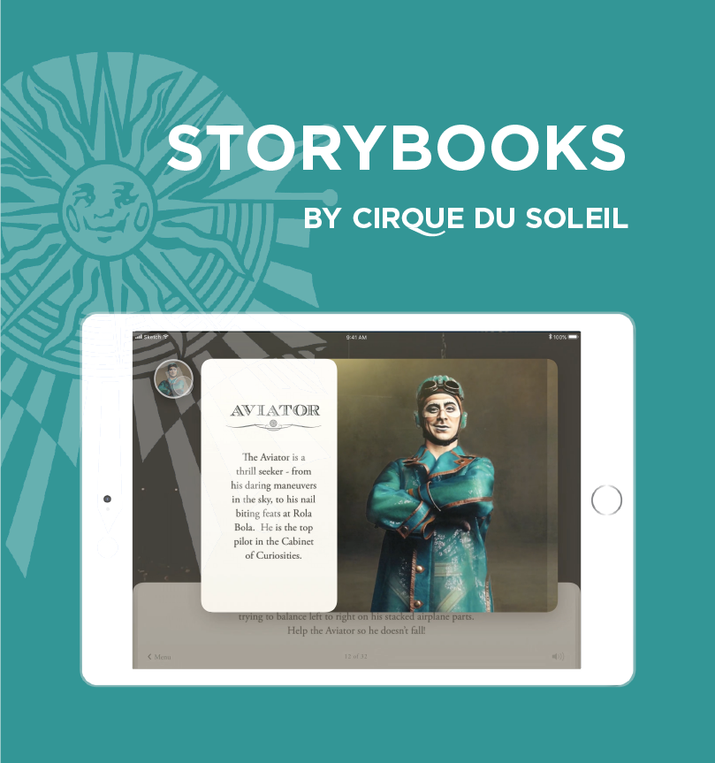
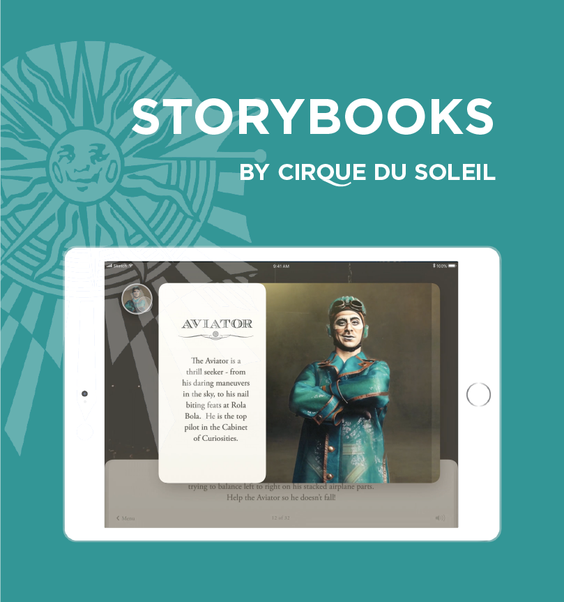

Storybooks, by Cirque du Soleil, is an interactive digital storybook application that extends the Cirque du Soleil experience beyond the show, whilst providing Cirque du Soleil an opportunity to further connect audiences with their brand values.
This project is based on Cirque du Soleil's 2017 touring show, Kurious: Cabinet of Curiosities. The plot of the show was adapted into a narrative where the reader opens and explores the cabinet of curiosities.
Contributions
My primary role for this project was to create curated visuals in accordance to the brand identity of Cirque du Soleil's Kurious show. This included the project pitch video, in which I assembled the video proposal and produced the voiceover, early stages of the interaction design assets, and photo assets. I also played a role in maintaining the presentation assets: imagery, video, content, and organizational flow, while maintaining the visual design consistency throughout the presentation, to ensure the proposal was supported by strong evidence and was easy to follow.
Some photo editing and touchups I made for our Keynote presentation of this project can be viewed on my Behance portfolio.
Tools
Illustrator, Photoshop, Premiere Pro, After Effects, Audition, Keynote
RESEARCH
Business Problem
Cirque du Soleil has been the leading innovator of live performance art as a nouveau circus for over 30 years, and has performed for 180 million people worldwide. However, with so many people having seen at least one show, Cirque has had difficulty driving repeat attendance, dropping 36.6% in tour revenue.
"The market for Cirque is maturing. An estimated 180 million people have seen a performance. How do you leave them wanting more?"
James Quigley, CEO Emeritus, Deloitte
"Cirque du Soleil, the operator of avant-garde circus events, has reported that revenues of its European tours fell by 36.6%... It's single biggest source of revenue was ticket sales which fell by 39%."
Christian Sylt, The Telegraph
Insights
How can Cirque du Soleil inspire their viewers, as much as they inspire their performers? How can we create a digital intervention that adds value to Cirque du Soleil’s customers? Does the experience that we’re providing have to be in show? And does it even have to be in the venue?
Challenge
But the challenge was that digital platforms couldn’t compete with the spectacle of a live show. In fact, our research showed that an intervention during the show could prove distracting, even taking away from the experience.
Brand Research
Cirque du Soleil's mission is "to invoke the imagination, provoke the senses, and evoke the emotions" of their audiences, something that helps them stand out against competitors. After comprehensive research of their values, we stumbled upon their recruitment process and learned that Cirque encourages their performers to live out their dreams on stage. What was abstracted from this was a new value of "creating dreams", in which the concept and product were focused on.
We saw the value of "creating dreams" as Cirque's driving force for the development and production of their shows and focused on that. We also saw creating dreams going hand-in-hand with extending the Cirque experience to strengthen their relationship with customers.
User Research
Speaking to people who had been to Cirque shows, and ones who had not, gave us insight into their perspectives on the brand and the experience as a whole. The people who had seen at least one show said the event was made into an occasion, and they would only go to a show once every few years because it was expensive. Some enjoyed the acrobatics and performances as a spectacle, while other who were more invested in the story aspect found the show much more emotional. However, the story of each Cirque show is not formally revealed, so it is up to the individual themselves to figure it out. But one common thought throughout all the interviews was the level of respect people have for the company. How could we leverage that into something that would drive higher return rates?
PROPOSAL
Opportunity
We found an opportunity to dive deeper into the stories behind Cirque du Soleil shows that could move their existing products for adults into a newer market for online users and young children. Unlike older generations who have a pre-existing connection to shows like Michael Jackson ONE and The Beatles LOVE because of their iconic figures, Cirque du Soleil can connect to a younger generation, fostering a love for the brand (brand loyalty), rather than to shows.
Concept
Through our Sprint process, we took three strands of insights: (1) leverage the brand, (2) more than a spectacle, and (3) external inspiration, and developed them into ideas that would drive our concept. These ideas stayed true to the values or Cirque, while allowing us to pursue new avenues in digital offerings.

Area of Intervention
Cirque had previously collaborated with a design firm to create an app to be used during the show. However, we recognized that the most fascinating part about the Cirque experience is the wonder of the performance. This should be highlighted, not taken away from. We chose our intervention point after the show, with an app to help customers relive their experience from their magical experience.

Journey Framework
The second iteration of our journey framework (with the first helping us decide where our area of intervention was) helped us see when the audience would most likely first encounter our product. The lows of the post-show gave us an idea of where we could help extend the Cirque experience. Specifically, we looked into after the family went home and the day after, to advertise the app.

Audience
Cirque's audience is mostly comprised of adults, and sometimes families, but we chose to design for families. While adults enjoyed the traditional circus, children are attracted to the nouveau circus. We think the story is an important aspect of Cirque shows, and it could add much depth to the experience. If we are able to bring out these stories, and create lasting impressions on children, it could foster a connection with the brand that carries into adulthood, as the new Cirque fans.

Persona
Our target persona, as we call "believers", are parents with young children who are looking for memorable experiences to enjoy together. On special occasions, they are willing to spend a little more, but they want to make sure the whole family finds the experience worthwhile.

Benefits to Business and Users
Storybooks benefits the business by creating a closer connection to their audiences and strengthening their offerings to a younger demographic through an app that allows for on-going use, rather than the one-time experience of a live show. For the users, this means more quality time between parents and children, as well as a means for parents to support a love of learning and reading for their children.
PROCESS
Product Pillars
We created four product pillars to help guide the creation process of Storybooks. Personalized: The idea of the app being a keepsake. Exploration: The ability to delve deeper into certain narratives. Interactive: Engaging with the content in a way that communicates the brand. Learning: Educational consideration that will entice parents into getting this product into the hands of their children.

Design Choices
We wanted to make the app feel like a person keepsake, like a souvenir, for the child, and created the inscription step as a way to integrate the child’s name into the story. Although the story is told in a traditional, linear narrative, the table of contents allows children to jump back to their favourite parts once its been unlocked. We wanted to adapt the most climactic moments of the show into the story and make them actual interactive activities children could engage with. This was important to us because the app was more than simply playing video and audio, but really about taking the opportunity of translating the magic and wonder Cirque du Soleil provides into actual interactions. We also wanted to integrate character information into the story through a natural way of discovery as they move through the story. This helps create a deeper connection with the characters and provides context for kids who have seen some interesting characters during the live show.

Immersive Interactions
Designing for the iPad was a move for accessibility, since most kids likely don’t have access to their own phones, and reinforced the idea of a keepsake as something that could be saved locally, rather than through a browser. The iPad also lends itself well as a sharable consumption device, shared between a parent and their child. We were also able to integrate the mechanical functions of an iPad with our content, such as utilizing the gyroscope for our balancing game and in the 360˚ video.

Learning Aspects Consideration
After speaking to a publisher and some parents through interviews, we realized there was a lot of interest in how we could adapt learning features into this, and how we could support growing reading skills. So that was a major move for us because it helped enforce the value to parents. So we adapted things like the read-aloud feature from Leapfrog and dictionaries that help with new vocabulary. And while our written content is at a 6 to 8-year-old reading level, this allows children at that age to read by themselves, but also allows parents to read to children younger than that while the kids can still interact with the media content, encouraging that quality bonding time between parent and child.
THE PROJECT
Pitch
Although digital platforms cannot replicate the thrill of live shows, and in-show apps have proven to be distracting, other means of digital interventions can offer opportunities for deep storytelling, that can extend the show experience and connect audiences to the brand's values. Storybooks enhances Cirque du Soleil’s ability to “create dreams” through an interactive reading experience children and parents can enjoy together.
Inscription: An idea we adapted from physical storybooks, this creates a personal keepsake for children, as well a more engaging experience by integrating their name into the book. Storybooks follows a linear narrative, but a table of contents system was created to allow children to jump back to their favourite parts at any time, while new content is unlocked as the story progresses.
Smoke Interaction: This scene is an important point in the story as it is the result of opening the Cabinet for Curiosities. Mimicking the show, this grand scene gives the reader a sense of all the characters, before delving into the story. This is an example of a moment of the show that is highlighted in the story.
360° Video: A 360° immersive experience not only allows children to get up close with their favourite characters, but allows them to relive their Cirque du Soleil experience by putting them in the centre of the sounds and surroundings.
Rola Bola: This app is more than simply for playing video and audio. By going deeper into the story and adapting the most climactic moments of the show into actual interactive activities, children can relive the magic and wonder of Cirque.
Characters: We want children to be able to naturally discover character information as they move through the story, to help them create a deeper connection with the characters. Integrating character information into the storybook can give readers context on performers they've seen during the show, or can give context for people who are reading the book before going to a show.
Read Along: It was important for us to include learning aspects into the storybook to support growing reading skills. This enforces the value for children, which in turn, provides value to parents. The written content is at a 6 to 8-year-old reading level; for children who can read on their own. Yet it's at a level where parents can read to younger children, while the child can interact with the media content. We adapted read-aloud from Leapfrog, as well as dictionaries to help with new vocabulary.
Longevity Plan
We believe this can be expanded to include all of their shows, allowing families to read storybooks of their favourite Cirque du Soleil performances, to extend the brand experience. With the magnificent range of shows developed by Cirque du Soleil, this app can reach so many people, allowing them to relive their experience and encouring them to create their own dreams.

END THOUGHTS
I would love to see Cirque du Soleil adapt new digital products to ensure they are able to captivate younger audiences for years to come. I think they have the opportunity to elevate their brand to new heights. By far, my favourite aspect of designing this product was the adaptation of learning features that support growing reading skills for children, while encouraging quality bonding time between parents and children. It was a heartwarming experience, and I hope to design more projects that are able to brings parents and children together, rather than separating the two, which is currently the case with most apps. If I were to continue working on this project, I would explore other Cirque performances, and see how the Storybooks could expand into a library of Cirque books. Thank you to Kristy Leung, Nikki An, Brandon Lal, and Mark Strathern for collaborating on this project.
 
